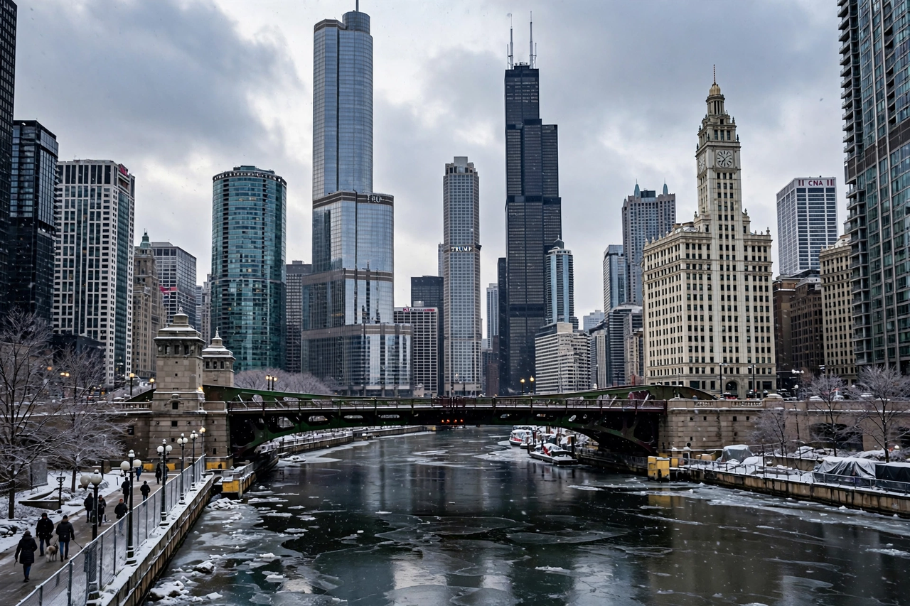

Top stories
City Hall, the neighbourhoods and a winter that tests everyone

The Tribune — founded 1847, long the flagship of the McCormick empire and the paper behind the WGN call letters ('World's Greatest Newspaper') — covers Chicago and the Midwest with a Pulitzer-laden investigative tradition and deep neighbourhood reporting.
News
Crime, City Hall and the neighbourhoods
The metro file is the paper's core.
Politics
Springfield and Washington, from Chicago's angle
State government and the Illinois delegation.
Sports
Cubs, Bears, Bulls, Blackhawks and Sox
The city's teams, covered by veteran beat writers.
Opinion
Editorials and the columnist tradition
The Tribune's institutional voice since the 19th century.
Latest & most read
- The investigation: City Hall under the microscope
- Cubs & Bears: the sports desk's day
- The architecture city: building news
- From the archive: famous Tribune front pages
About
Background on this news organisation: Wikipedia article.